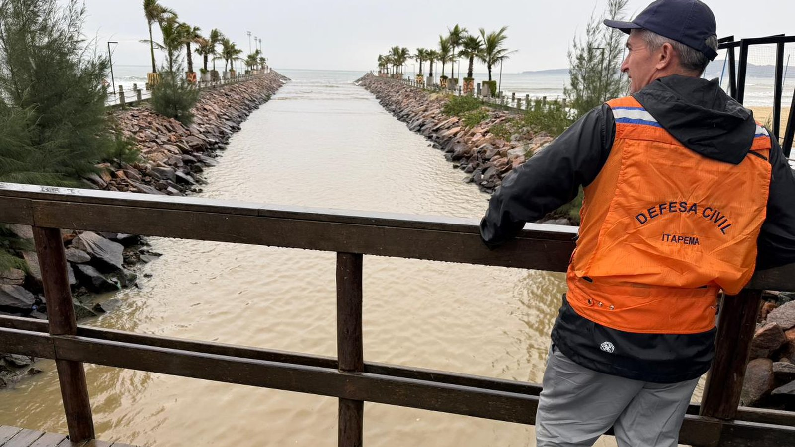

Santa Catarina · Clima
Santa Catarina · ClimaSanta Catarina sai de 9 graus negativos para 30 graus na mesma semana, e a frente fria chega na sexta
A frente que estava prevista para sexta é a que agora trava o tempo no fim de semana.
Uma frente semiestacionária deixa o tempo instável. No sábado a instabilidade cresce à tarde e à noite, no domingo fica o dia inteiro, e o risco é alto para alagamento, enxurrada e queda de árvore.
Em 30 segundos · Modo de Leitura, formato original Santa Informa
A Defesa Civil de Itapema alertou nesta quinta para tempo severo no fim de semana.
Entre sábado, domingo e segunda, a chuva pode somar de 100 a 150 milímetros.
A causa é uma frente semiestacionária, que fica parada sobre a região.
No sábado (29), a instabilidade aumenta entre a tarde e a noite.
No domingo (30), ela permanece o dia todo.
Nos dois dias o risco é alto para temporal com granizo e rajada de vento.
Pode haver destelhamento, queda de árvore, alagamento e enxurrada.
A orientação é não atravessar área alagada, a pé ou de carro.
Em emergência, 199 é a Defesa Civil e 193 é o Corpo de Bombeiros.
Santa CatarinaPublicada em Redação Santa Informa

A Defesa Civil de Itapema publicou nesta quinta-feira, 27, um alerta de tempo severo para o fim de semana. A causa é uma frente semiestacionária, aquela que fica parada em cima da região em vez de passar rápido. Enquanto ela não sai, o tempo segue instável, com chuva que vai e volta e temporal no meio.
No sábado, 29, a instabilidade aumenta principalmente entre a tarde e a noite. É nesse período que estão previstos os temporais, que podem vir com granizo, rajada forte de vento e chuva intensa. No domingo, 30, a instabilidade fica o dia inteiro. Nos dois dias o risco é considerado alto para tempo severo em Itapema, e a Defesa Civil pede atenção da população e acompanhamento dos avisos oficiais.
Somando sábado, domingo e segunda-feira, 31, o acumulado em Itapema pode ficar entre 100 e 150 milímetros. É bastante água em pouco tempo, e é justamente isso que acende o alerta nas áreas mais sujeitas a alagamento e a enxurrada. Além dos temporais, a previsão aponta volume elevado de chuva ao longo de todo o período.
A Defesa Civil lista o que pode acontecer num temporal desse tipo: destelhamento, dano na rede elétrica, queda de galho e de árvore, alagamento e enxurrada. Durante a chuva forte, a orientação é procurar um lugar seguro e não ficar perto de árvore, poste, placa, muro ou estrutura que o vento possa derrubar.
Se a rua encher, não atravesse, nem a pé nem de carro. É a orientação mais repetida pela Defesa Civil, e a que mais gente ignora. Água parada esconde bueiro aberto e buraco de asfalto, e enxurrada arrasta veículo com pouca profundidade. Em caso de emergência, os telefones são 199, da Defesa Civil, e 193, do Corpo de Bombeiros. A Prefeitura atende no (47) 3268-8000.
O aviso não é só de Itapema. A Defesa Civil de Santa Catarina também publicou nesta quinta, às 10h20, atenção meteorológica falando em temporal com granizo, vendaval e chuva intensa nos próximos dias no estado. É um fim de semana cheio no litoral, com festa, competição e gente de fora na estrada, e o pior momento para descobrir na hora que o tempo virou. Quem tem programa ao ar livre marcado, quem vai pegar a BR-101 e quem mora em rua que costuma alagar tem dois dias para se organizar.
O resumo de 30 segundos está no topo e a versão completa é o texto acima. Aqui ficam as três leituras da casa sobre o mesmo assunto.
Clara, a otimista
Aviso com dois dias de antecedência vale muito. Dá tempo de limpar a calha, tirar o vaso da sacada, recolher a lona solta do quintal e combinar com o vizinho idoso quem liga para quem se faltar luz.
Boa parte do estrago que temporal faz por aqui é de coisa que estava frouxa e podia ter sido presa antes. A previsão chegou na quinta. O fim de semana começa no sábado.
Seu Prudêncio, o criterioso
Merece atenção o volume. De 100 a 150 milímetros em três dias não é chuva de rotina, e o efeito depende menos do céu do que do chão: bueiro entupido, boca de lobo coberta de folha e canal com assoreamento transformam chuva forte em rua alagada. Vale acompanhar como as áreas de sempre respondem desta vez, porque é isso que mostra se a drenagem melhorou de verdade.
Uma sugestão útil para quem tem comércio na parte baixa: suba a mercadoria do estoque nesta sexta, ainda com tempo bom, e não no sábado à tarde com água na porta. Custa uma hora de trabalho e evita prejuízo que o seguro raramente cobre inteiro.
Dito isso, o alerta chegou cedo, detalhado dia a dia, com faixa de acumulado e telefone de emergência. Aviso assim, publicado com antecedência e em linguagem clara, é exatamente o que se espera de uma Defesa Civil que trabalha bem. Quem ler e agir tem tudo para atravessar o fim de semana sem susto.
Caco, o sarcástico
Frente semiestacionária. Traduzindo, é a frente que chegou, gostou da vista e resolveu ficar. Aqui é assim mesmo, todo mundo que vem passar o fim de semana acaba estendendo.
Cento e cinquenta milímetros no fim de semana em que a agenda estava cheia. O tempo aqui tem um senso de oportunidade impecável.
E olha o lado bom: com essa água toda, ninguém vai poder reclamar da falta de chuva por um bom tempo. Uma reclamação a menos na fila.
Fontes: Prefeitura de Itapema, comunicado da Defesa Civil publicado pela Imprensa PMI em 27 de agosto de 2026, com o alerta de tempo severo para sábado, domingo e segunda, a frente semiestacionária como causa, a instabilidade concentrada entre a tarde e a noite de sábado e presente o dia todo no domingo, o risco alto para destelhamento, dano na rede elétrica, queda de galho e árvore, alagamento e enxurrada, o acumulado de 100 a 150 milímetros entre 29 e 31 de agosto, a orientação de procurar local seguro, não permanecer perto de árvore, poste, placa e muro e não atravessar área alagada a pé ou de veículo, e os telefones 199 da Defesa Civil e 193 do Corpo de Bombeiros. Defesa Civil de Santa Catarina, atenção meteorológica SDC/SC publicada em 27 de agosto de 2026 às 10h20, prevendo temporais com granizo, vendavais e chuva intensa nos próximos dias no estado.
Santa Catarina · ClimaA frente que estava prevista para sexta é a que agora trava o tempo no fim de semana.
 Santa Catarina · Clima
Santa Catarina · ClimaO aviso de mar grosso da semana passada, com as mesmas orientações de praia.
 Litoral Norte · Infraestrutura
Litoral Norte · InfraestruturaO trabalho de drenagem que decide se a chuva forte vira alagamento ou não.